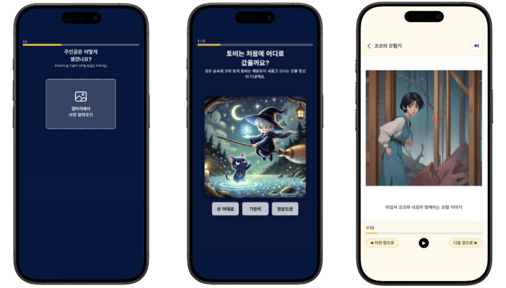
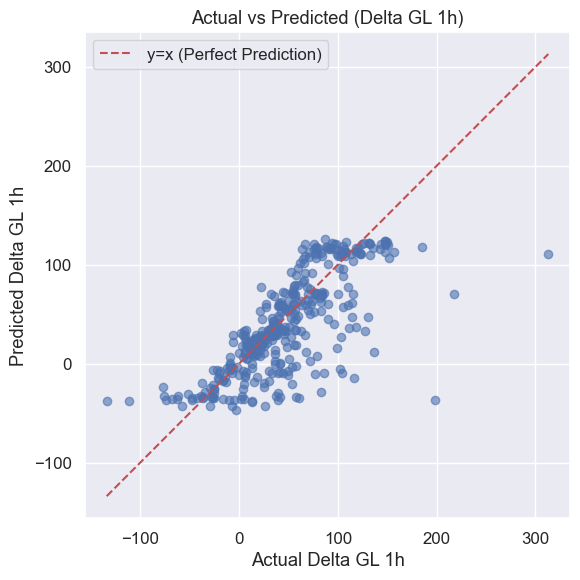

꿈도깨비
아이의 선택에 따라 글과 삽화가 실시간으로 만들어지는 동화 생성 웹 서비스
- 역할
- 팀장, 백엔드
- 담당
- 삽화 생성 기능 구현, AWS EC2 서버 구축
- 팀
- 책먹는 부기, 4명 (백엔드 2, 프론트엔드 2)
 시연 영상의 한 장면입니다. 이미지를 누르면 YouTube에서 영상이 열립니다.
시연 영상의 한 장면입니다. 이미지를 누르면 YouTube에서 영상이 열립니다.

왼쪽부터 주인공 사진 올리기, 이야기 전개 고르기, 완성된 동화 읽기. 꿈도깨비 저장소 README의 화면이며, 누르면 크게 열립니다.
만든 것
GPT-4o와 Stable Diffusion으로 7~9세 아이의 선택을 반영해 동화책을 만듭니다. 아이가 전개 방향을 직접 고르고 표지를 직접 만들며, 이름과 사진이 반영된 맞춤형 동화책에서 이야기의 주인공이 됩니다.
푼 문제
기존 AI 동화 생성에서 반복해서 필요했던 2차 수정 단계를 시스템 안에 넣었습니다.
연구와의 연결
이 서비스를 바탕으로 FairyRAG 논문을 썼습니다. FairyRAG는 KCC 2025 학부생 장려상을 받았습니다.
글벗GeulBeot
웹소설 원고가 기존 설정과 충돌하는지 판정하는 Agentic AI, RAG 시스템
- 형태
- 개인 GitHub 저장소
- 기술
- LangGraph, LangChain(OpenAI), FAISS, pandas
lore_keeper.run()
- classify청크 유형 분류
- extract설정 Fact 추출
- RAG searchLore DB 검색
- judge충돌 판정
▶ 실행 버튼을 눌러보세요
실제 LLM을 호출하지 않는 규칙 기반 데모입니다. 인물과 설정은 데모용 예시입니다.
이미 정해 둔 설정
- 카엘
- 오른손잡이, 검사
- 리나
- 북쪽 설원 출신, 17살
문장을 눌러 실행해 보세요
하는 일
웹소설 텍스트를 청크로 나누고, 청크에서 설정(lore item)을 추출한 뒤 기존 DB와 비교해 설정 충돌 여부를 판정합니다. 충돌이 없으면 Current_DB에 저장하고, 충돌이면 Conflict_DB에 기록합니다.
저장소 설명: “글벗: 당신의 가장 가까운 글친구 - Agentic AI와 RAG 시스템을 활용한 설정 충돌 감지 및 복선 추천 시스템”
실제 흐름
classify_chunk_type청크를 네 유형으로 나눕니다. 단순 서술은 설정을 추출하지 않습니다.extract_facts_from_chunk8개 필드로 설정을 추출합니다.search_*검색 도구 4개 중에서 골라 기존 설정을 찾습니다.judge_conflict충돌 증거 원문이 실제로 있을 때만 충돌로 판정합니다.
저장소 4종과 검색 도구 4개
저장소 4종
Lore_DB- 확정된 설정 (jsonl + FAISS)
Full_Story_DB- 소설 원문 청크 (jsonl + FAISS)
Current_DB- 현재 회차의 설정 (리스트 + 임시 FAISS)
Conflict_DB- 충돌 로그 (jsonl)
에이전트가 고르는 검색 도구 4개
search_current_dbsearch_lore_dbsearch_full_story_dbsearch_current_chunks
SELLON
멀티채널 VoC 기반 상품 이슈 탐지·진단 AI 플랫폼
- 역할
- 조장, AI 파트 전담
- 배경
- KT AIVLE School 프로젝트
- 대상
- 멀티채널 이커머스 셀러 (B2B AI SaaS)
검증 결과
수치마다 데이터와 조건이 다릅니다. 하나의 정확도로 합쳐 읽을 수 없습니다.
-
98.31%F1
Agent1 CS 부정 판별
합성 mock 96,524건 기준. FPR 0.64%.
-
87.57%F1
Agent1 리뷰 속성 분류
AI Hub Training 300건, 독립 3회 평균.
-
82.7%Recall
Agent2 E2E 탐지
mock 12,410건, 3회 평균. 관측 범위 76~88%.
-
84.3%gpt-4o
Agent2 원인 분류
n=280 × 3회. gpt-4o-mini는 79.4%.
테스트: 로컬 967 passed / 16 skipped, CI 982 passed / 1 skipped.
문제
오픈마켓을 여러 곳에서 운영하면 같은 상품의 CS와 리뷰가 채널별로 흩어집니다. 운영자는 엑셀과 관리자 화면을 오가며 세 가지에 직접 답해야 합니다.
- 지금 어떤 상품 속성의 불만이 늘었는가?
- 특정 채널만의 문제인가, 상품 전체의 문제인가?
- 실제 고객 표현과 상세페이지를 근거로 무엇을 고쳐야 하는가?
만든 것
쿠팡, 네이버, 지그재그에 흩어진 CS 문의와 상품 리뷰를 상품 단위로 통합하고, 고객이 반복해서 말하는 문제를 탐지해 원인과 개선안까지 연결합니다.
설계 원칙
LLM 하나에 모든 판단을 맡기지 않습니다.
- 의미 해석
- LLM
- 이상 판정
- 관측 데이터와 통계 검정
- 환각 방어
- 스키마와 결정론적 검증 코드
- 최종 의사결정
- 셀러의 승인, 수정, 반려
구성
- Agent1 VoC 속성·감성 분류
- 속성 기반 감성 분석, 다중 라벨. JSON 출력을 Pydantic과 Enum으로 검증합니다.
- Agent2 통계적 이상탐지와 원인 진단
- 최근 7일과 직전 28일을 비교합니다. 최소 표본 10건, Fisher 단측 정확검정, 상품별 BH-FDR 보정(q=0.05), 최소 상승폭 3%p. 채널 패턴으로 편중형과 전역형을 판정합니다.
- Agent3 근거 기반 개선안 생성
- ChromaDB 검색(RAG)과 Tool Calling을 씁니다. 인용 문구가 실제 원문에 있는지 코드로 대조하고, 3관문 자기검증을 거칩니다. 셀러 피드백(승인, 수정, 반려)을 축적합니다.
- 리포팅
- 월간 리포트 PDF, CS 답변 가이드라인
Agent2가 알림을 내기까지 거치는 관문
- 7일과 28일 비교최근 7일을 직전 28일과 비교합니다.
- 최소 표본 10건데이터가 부족한 채널의 과도한 비율 변동을 막습니다.
- Fisher 단측 정확검정부정률이 오른 경우만 검정합니다.
- 상품별 BH-FDR 보정q=0.05. 여러 검정을 함께 할 때의 거짓 발견을 제어합니다.
- 최소 상승폭 3%p통계적으로만 유의한 미세한 변화를 뺍니다.
모두 통과하면 채널 패턴으로 편중형과 전역형을 판정하고, 고객 원문으로 원인을 진단합니다.
기술
Python 3.12, FastAPI, OpenAI API(JSON structured output, Tool Calling), SciPy, statsmodels, Pydantic v2, ChromaDB, RabbitMQ, Kafka, PostgreSQL, Amazon S3, WeasyPrint, LangSmith, pytest, Docker, GitHub Actions
1형 소아당뇨 예측 시스템
CGM(연속혈당측정) 데이터로 1형 소아당뇨 환자의 혈당을 예측하고 음식을 추천합니다.
- 배경
- 수업 팀 프로젝트 (BigDataPrograming A Team H)
- 모델
- XGBoost와 LightGBM 앙상블 (회귀)

실측값과 예측값 비교(ΔGL@1h). JAEB 데이터로 학습한 모델을 ICT Innovaties Zorg의 10~17세 데이터에 적용한 결과입니다. 점선은 실측과 예측이 같은 선입니다. 저장소 학습 노트북의 출력 그림입니다.
노트북에 기록된 평가
- MAE
- 8.09
- RMSE
- 11.96
- R²
- 0.754
ΔGL@1h 회귀, 혈당 단위는 mg/dL입니다. JAEB 데이터에서 추출한 식사 이벤트 2,765건을 8:2로 나눈 테스트 553건 기준입니다. 입력 피처는 7개(시간대, 나이, 성별, 몸무게, 키, 혈당, 식후 1시간 AUC 보정값)입니다.
하는 일
식사 전후의 혈당 변화(ΔGL@1h, 식사 후 1시간 혈당 변화량)를 예측하고, 혈당 반응이 낮은 영양성분의 메뉴를 추천합니다.
데이터
공개 CGM 데이터 2종(JAEB Center의 만 1~6세 데이터, ICT Innovaties Zorg의 10~17세 데이터)과 식품의약품안전처 공공 레시피 DB를 씁니다.
사용 흐름
- 입력혈당과 신체 정보
- 예측ΔGL (식사 후 1시간 혈당 변화량)
- 추천레시피 DB에서 탄수화물과 혈당 반응이 낮은 레시피